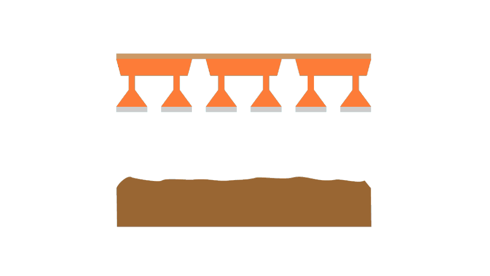

谈及航母的改建工程，
当时为了解决现场建设困难，他们做了大量的工作：一是统筹好所有的工作项目，精确安排每人每天的任务，最忙的时候精确到每个小时的具体任务；二是提高所有的施工质量，通过
保证质量，在更大程度上节约时间；三是加班加点。
“通过这三个方面的手段，才把时间给抢回来。”
王治国回忆，“因为我们在北方，那一年遇上了五十年不遇的严寒。前面的很多土建工作，受温度影响很大，耽误了时间。为了抢进度，最后我们把时间抢回来了。”

人工模拟降雨系统由供水装置、降雨装置、控制中心组成，分为三个降雨区，总降雨面积为370平方米，降雨喷头高度18米，可模拟雨强变化、暴雨移动、分区分水质降雨。设计雨强范围为16-300mm，是目前世界上最先进的降雨模拟系统之一。
人工模拟降雨系统由供水装置、降雨装置、控制中心组成，分为三个降雨区，总降雨面积为370平方米，降雨喷头高度18米，可模拟雨强变化、暴雨移动、分区分水质降雨。设计雨强范围为16-300mm，是目前世界上最先进的降雨模拟系统之一。
人工模拟降雨系统由供水装置、降雨装置、控制中心组成，分为三个降雨区，总降雨面积为370平方米，降雨喷头高度18米，可模拟雨强变化、暴雨移动、分区分水质降雨。设计雨强范围为16-300mm，是目前世界上最先进的降雨模拟系统之一。